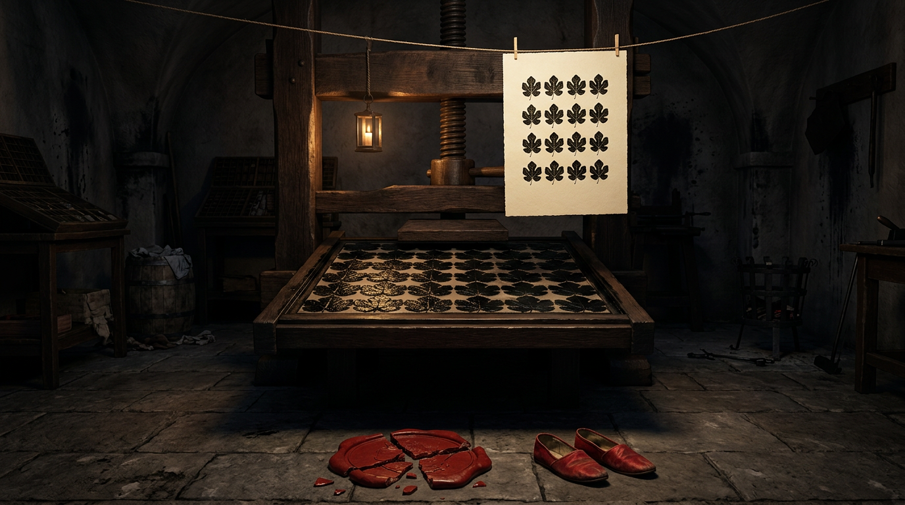

Rule 34 Explained: 37,000 Years of Porn, No Exceptions
Part of The Attention Machine · Chapter 6 of 6 →Rule 34 Is Thirty-Seven Thousand Years Old and Somebody Carved It on the Ceiling Above the Kitchen
Adults only. Language, history, and one goat.
Somewhere in the Vézère Valley in southwestern France, about thirty-seven thousand years ago, a man (probably a man, we’ll get to that, and it isn’t flattering) lay on his back under a limestone overhang. Smoke from the cookfire curled past his face. Reindeer fat spat on the coals. And he took a sharp stone to the ceiling and carved a vulva.
Not a god. Not the sun. Not the mammoth that would feed his entire clan until the thaw. A vulva. Right above the kitchen.
Then, for shits and giggles, he channeled his inner twelve-year-old… and decided a phallus with two balls was the obvious way to complement his work of art. He probably grunted, then called his buddies over… who gave him a high five. (Archaeology’s buzzkill footnote: Castanet’s ceiling is all vulvas. The dick took another nine thousand years and a German. We’ll get there.)
That is Rule 34 in its first draft. The internet law says if it exists, there is porn of it, no exceptions. The “it” back then was a rock, and the internet was the rock, and the porn was on the rock, and everybody ate dinner under it.
Settle in. Pour something brown with a bit of Baileys. You came here because you typed “what is Rule 34” into a search bar with one eye shut and your thumb hovering over the incognito button, you magnificent degenerate, and I respect it, and I’m going to give you the answer. Then I’m going to give you thirty-seven thousand years of receipts, a Pope, an octopus, a stone dick that doubled as a hammer, a goat you will never unsee, and the single most profitable metal shutter in Roman history.
What Is Rule 34? (For the Three People in the Back Pretending They Don’t Know)
Rule 34 is an internet law, unofficial and unkillable, that says: if something exists, somebody has made porn of it. Any cartoon, any object, any concept, any brand mascot, any piece of municipal infrastructure. If you can name it, somebody has drawn it with its pants off. The sequel, Rule 35, closes the loophole: if there’s no porn of it yet, porn will be made of it… most likely by the time you finish reading this post. Heck, most likely by someone reading this post.
Here’s where it came from, and it’s more specific than you’d think.
On August 13, 2003, a British artist named Peter Morley-Souter, drawing as TangoStari, made a one-panel webcomic about the moment he stumbled onto porn parodies of a comic strip he’d loved as a kid. A man stares at his monitor with the face of somebody watching his childhood get mugged behind a Denny’s. The caption: “Rule #34 There is porn of it. No exceptions.”
The comic sank without a trace. The caption did not. It wriggled out of the panel the way a rat leaves a sinking ship, fat, wet and determined, and swam straight to 4chan.
By late 2006 the anonymous bog-dwellers of 4chan had compiled a list called the Rules of the Internet, most of it inside jokes, numbered by whoever was drunkest that night and renumbered the next morning by whoever was drunker. Rule 34 was the one that kept its number. It predates the rest of the list by about three years. It was the old-timer at the end of the bar when the kids showed up, and it had already ordered.
By 2009 the Daily Telegraph ranked it in a top ten of internet laws. By 2013 CNN called it likely the most famous internet rule to cross into the mainstream. Charles Stross named a whole science-fiction novel after it. It became a verb (“someone’s going to Rule 34 that”), a noun, a threat, a prophecy and a weather report.
I was 14 on the net, the computer and modem dueling it out, two cats just to give me a few Megabits to surf. Pure chaos. My dog barking at the massive CPU… it was either a small lion having some really rough sex, or the thing was possessed by, well, the THING from John Carpenter’s film. I finally get my ticket to the bit-infused high seas. Off I go.
Two clicks in, dumbfounded, staring at, yup, that’s Tony the Tiger plowing Cookie Monster. Too much. My head still reeling. One image, multiple points of contact with the weirdness that is the human mind.
So that’s the meme. A webcomic, a forum, a number. Most explainers stop right here, slap a VPN ad underneath and go to lunch.
STOP.
Pull the car over. Kill the engine. Hazards on. That bumper sticker you think is so funny on proud display: “smoke pot, eat twat, smile a lot.” And you wonder why no one’s snatched you up?
You thought this was a meme explainer. You thought I was going to walk you politely down the shoulder of the information superhighway, and instead I yanked the wheel, jumped the median, took out a Cracker Barrel billboard and drove us into a cave. In France. Thirty-seven thousand years ago. Headlights off. Like that scene in Planes, Trains and Automobiles where Steve Martin turns to John Candy, and the man’s the DEVIL!
Because the thing nobody tells you about Rule 34 is that the internet didn’t invent it. The internet discovered it, the way Columbus discovered America: a lot of people were already living there, and they’d decorated.
I’m not an archaeologist. I’m not freaking Indiana Jones, and I’m definitely not Mary Beard, who could take this whole post apart with one raised eyebrow and a footnote in Latin. But I read the papers. And the papers are filthy.
The Ceiling Above the Kitchen
Near the village of Sergeac, in the Dordogne, there’s a collapsed rock shelter called Abri Castanet. People lived there. Early modern humans, the Aurignacians, the first of our kind to settle in Europe. They made beads there. They worked bone and antler there. They kept fires going under a stone roof and cooked dinner and argued, presumably, about whose turn it was to go kill something.
And somebody carved pictures into that roof. Animals. Geometric doodles. And vulvas.
In 2007, excavators found a chunk of that collapsed ceiling, a limestone block weighing around one and a half tons, lying face down on the old living floor. They flipped it. On the underside was the engraving, and the lead researcher, NYU’s Randall White, has described his first reaction with the most honest sentence ever spoken in a trench: “Oh my god, a vulva.”
They dated the bone the block had crushed when it fell and published in PNAS on May 14, 2012: about 37,000 years old. And that’s a minimum, since it’s the date the roof came down, not the date somebody got artistic. It’s among the oldest dated wall engravings in Europe, likely older than the masterpieces of Chauvet Cave two hundred miles east.
Now hold that in your brain pan for a second.
Chauvet is deep underground. Dark, ceremonial, a cathedral. Castanet is the opposite. It’s the kitchen. The engravings hung over the hearths and the tool workshops and the bead benches. White’s whole point is that this art belonged to daily life.
So picture it. Grandma’s stirring the reindeer stew. The kids are knapping flint and slicing their thumbs open. And up on the ceiling, gazing down on all of them, older than writing, older than farming, older than the gods with names, is the same shape a fourteen-year-old draws on a bathroom stall at a Waffle House off I-75 at two in the morning.
The medium changed. The doodle did not.
It wasn’t a one-off, either. White has said the region turns them up “again and again and again.” A century earlier, at the neighboring shelter of Abri Blanchard, the great prehistorian Abbé Henri Breuil, a Catholic priest, mind you, studied a heart-shaped engraving and catalogued it in Latin: pudendum muliebre. A man of the cloth, squinting at a cave wall, reaching for a dead language so he wouldn’t have to say the word out loud in front of the rocks.
Germany Brought a Stone Dick and Used It as a Hammer
Cross the Rhine. Swabian Jura, southwestern Germany. A cave called Hohle Fels.
In 2008, Nicholas Conard’s team from the University of Tübingen dug up a figurine carved from mammoth ivory, about six centimeters tall and at least 35,000 years old, the oldest undisputed sculpture of a human body ever found. And she is a lot. Colossal breasts. A carved vulva, emphatic, deliberate, as if the sculptor went back in with the tool for a second pass and then a third, for emphasis. No head. Where the head should be there’s a little loop, so you could wear her on a cord.
The oldest human figure ever carved by human hands is a pair of tits on a necklace.
Let that be your working model of the species from now on.
The same cave had already coughed up something even more honest. In 2005 the Tübingen team announced a polished siltstone phallus, about twenty centimeters long, around 28,000 years old, reassembled from fourteen fragments. Life-size. Anatomically ambitious. Conard noted it was highly polished, which is the most diplomatic sentence in the history of German academia. And then the detail that makes me love these people with my whole heart: the wear marks show it was also used to knap flint.
A dildo that doubled as a power tool.
Twenty-eight thousand years before the infomercial. Before the Slap Chop, before the ShamWow, before a single sweaty man in a headset yelled BUT WAIT, THERE’S MORE, some Ice Age visionary was out there with one tool for two jobs and a business model nobody would understand for another twenty-eight millennia. When it went on display at the prehistory museum in Blaubeuren, the exhibition was titled, and I swear on the ShamWow, Ice Age Art: Clearly Male.
The First Crossover Fan Fiction Is Painted on a Rock in Chauvet
Now we go to the cathedral.
Chauvet Cave, in the Ardèche, holds some of the oldest and finest paintings our species ever made. Lions, rhinos, horses, mammoths, so alive you expect them to steam. More than thirty thousand years old.
Deep inside, a pendant of rock hangs from the ceiling like a stone udder. On it, in charcoal: the lower half of a woman, legs and a dark pubic triangle. And leaning over her, fused into her, a creature with the head and hump of a bison. Researchers call it the Venus and the Sorcerer.
I call it what it is. The first crossover fan fiction. Human, meet Bison. Thirty millennia before somebody ran a cartoon pony through the same engine, a person holding a burnt stick and a great many feelings looked up at a ceiling and thought: what if, though.
Sacred? Probably. Shamanic? Maybe. Erotic? Look at it. Rule 34 doesn’t care about your intent. Rule 34 asks one question, does it exist, and then answers itself, smugly, in charcoal.
Egypt Invented the Men’s Magazine and the Furry Section in the Same Scroll
Fast forward to roughly 1150 BCE. Deir el-Medina, the village of the craftsmen who carved the royal tombs in the Valley of the Kings. Skilled labor. Guys who, around the same era, staged one of the earliest labor strikes on record when the grain rations didn’t show up. That’s the energy of this village. Union men with brushes and grievances.
Somebody there painted the scroll we now call the Turin Erotic Papyrus, about eight and a half feet long. It’s been nicknamed the world’s first men’s magazine, and fair enough. One half is a dozen sex scenes starring a balding, scruffy little man with a member so outsized it should pay its own rent, and women in assorted states of athletic generosity.
The OTHER half? Animals doing people things. A lion playing a board game with an antelope. Cats herding geese like shepherds. Creatures waited on like nobility.
In a single scroll, three thousand years ago, Egyptian tomb painters invented the dirty magazine and the furry fandom and stapled them together. All that’s missing is a subscription card falling into your lap.
The First Paywall Was a Metal Shutter in Pompeii
Next stop, the Bay of Naples, where Vesuvius froze Pompeii and Herculaneum in 79 CE, so we know exactly how the Romans decorated. They decorated with dicks.
Dicks on oil lamps. Dicks on wind chimes, little bronze tintinnabula, winged phalluses with bells dangling off them, tinkling in the doorway like a horny dreamcatcher. Dicks carved into paving stones and painted over shop doors, for luck and to ward off the evil eye. Frescoes in bedrooms and brothels laying out positions with the clinical confidence of an IKEA manual, minus the leftover screws. And from the Villa of the Papyri at Herculaneum, a marble of the god Pan and a she-goat, engaged in an activity I’m not going to describe, because I want you to keep eating cheese.
For the Romans this wasn’t scandal. It was décor. A phallus was a good-luck charm, like a horseshoe, if horseshoes could get you pregnant.
Then the Bourbons dug it all up, and the shame arrived by the cartload.
In 1819, the future King Francis I of the Two Sicilies toured the Naples museum with his wife and young daughter (great planning, Your Highness), saw what Pompeii had been hanging on its walls, and lost his royal shit. Everything sexual got pulled from display and locked in a room: the Gabinetto Segreto, the Secret Cabinet. Access by permission. Mature gentlemen of sound morals. Scholars. Anyone who could bribe a guard, which was everyone.
And at Pompeii itself they bolted metal shutters over the filthiest frescoes. The shutters opened for male tourists. For an extra fee. Women, no. Children, no.
Read that again.
Two thousand years of uncomplicated Roman bonking, and within one royal fainting spell somebody had invented the peep show. A locked panel, a curious man, a coin. That isn’t a museum policy. That’s a business model. That’s OnlyFans with hinges.
And it backfired, gloriously, the way it always does. Locking it up made the Secret Cabinet famous across Europe. Getting a peek became a rite of passage for gentlemen on the Grand Tour, right up there with catching syphilis in Venice. The cabinet stayed mostly shut for a century and a half, cracked open under Garibaldi, cracked again in the 1960s, and only opened to the general public in 2000, with its own gallery from 2005.
The Pope Who Made Smut Go Viral

New technology, same scandal, right on schedule.
In 1524, in Rome, the painter Giulio Romano, Raphael’s star pupil, no slouch with a brush, drew sixteen sexual positions. The engraver Marcantonio Raimondi cut them into copper. Copper means copies. The result was I Modi, “The Ways,” which is a beautifully understated title for sixteen ways to break a bed.
Pope Clement VII was not a fan. He had Raimondi thrown in prison and ordered the prints destroyed.
What followed was the dumbest marketing decision of the Renaissance. The poet Pietro Aretino, a professional scandal with a quill and a mortgage, helped spring Raimondi, then sat down and wrote sixteen filthy sonnets, one per position. The whole thing came back around 1527 with pictures AND words. The Pope had taken a print run and accidentally greenlit a franchise.
The Church destroyed nearly every copy. Nearly. Fragments survive, and the legend survived whole, and for five hundred years “the lost positions” have been the most wanted dirty pictures in Western art. Not because they’re the best. Because a man in a very tall hat said nobody could look.
Newest medium. Oldest content. A lock, and then a line around the block.
Hokusai Had Tentacles Before Your Search History Did
Japan, 1814. Katsushika Hokusai, the man who painted The Great Wave, the most famous wave in the history of water, publishes a book of shunga, erotic woodblock prints, literally “spring pictures.” Inside is The Dream of the Fisherman’s Wife: a woman in ecstasy, wrapped up with two octopuses, one of them extremely busy, the empty space around them crowded with what amounts to dialogue.
Two hundred and twelve years ago.
So the next time some smug nineteen-year-old tells you the tentacle thing is a sick modern internet invention, you tell him it’s a Hokusai. You tell him it hangs in museums. You tell him it came from the same hand that gave us the wave on the tote bag his aunt carries to Whole Foods. And then you watch his face do the exact thing Peter Morley-Souter’s face did in 2003.
Rule 34 didn’t just conquer the land. It went to sea. It went to sea, it brought snacks, and it learned to hold eight things at once.
Every New Medium Gets the Oldest Content First
Fine. Let me lay the whole carcass on the table, because one example is an anecdote and eight is a mechanism.
| Medium | The smut shows up | Then somebody builds a cabinet |
|---|---|---|
| Rock | Abri Castanet, ~37,000 years ago | a ceiling falls on it, by accident |
| Stone and ivory | Hohle Fels: the necklace Venus, the hammer phallus | a museum case labeled Clearly Male |
| Charcoal on cave rock | Chauvet's Venus and the Sorcerer | a cave sealed by a landslide for 20,000-odd years |
| Papyrus | the Turin Erotic Papyrus, ~1150 BCE | a drawer in Turin |
| Fresco and bronze | Pompeii and Herculaneum | 1819, the Secret Cabinet, shutters with a fee |
| Printing press | I Modi, 1524 | a Pope, the same year |
| Woodblock | shunga, Hokusai, 1814 | Edo-era censorship crackdowns |
| Photography | erotic daguerreotypes, within years of 1839 | obscenity laws, the Comstock Act of 1873 |
| The internet | you know | named and numbered in 2003, filtered ever since |
| AI image models | the same week, give or take a weekend | still being argued in committee |
That’s the law under the law. Give human beings a new surface and the first thing they put on it is a cat, and the second thing is the oldest picture we know how to make. Then somebody in authority builds a cabinet. Then the cabinet becomes the attraction. Then the cabinet gets a cover charge.
I’m not freaking Marshall McLuhan, but I’ll borrow him for one line: the medium is the message. Except the message hasn’t changed in thirty-seven thousand years. It’s the same message. It’s always been the same message. The message is phwoar.
The Counterargument, Properly Made
I’ve been having a lot of fun. Time to let the prosecution speak, because three of my favorite claims have real holes in them and you should hear about the holes from me, not from the top comment.
1. The cave “vulvas” might not be vulvas. That’s a modern reading. Plenty of these engravings are ovals, circles, Q-shapes and triangles, and there’s a serious line of scholarship arguing that the “vulva” label says more about the excavators, mostly men, mostly a century ago, one of them literally a priest reaching for Latin, than about the people who did the carving. Fertility mark, clan sign, calendar, ritual, doodle: all on the table. Fair. I’d only point out that when an abbé, an NYU professor and a teenager at a Waffle House independently reach the same reading, the reading has legs. Possibly two. Possibly parted.
2. Who made Ice Age art? Maybe horny teenagers. The biologist R. Dale Guthrie argued in The Nature of Paleolithic Art (2005) that a large share of it, judging partly by the sizes of the handprints on the walls, was made by adolescent boys, and that the favorite subjects, big game and naked women, are about what you’d expect from adolescent boys. Other scholars push back hard. But if Guthrie is right, it doesn’t weaken Rule 34. It’s Rule 34’s origin story. The first internet was a cave full of fifteen-year-olds and a fire nobody was watching.
3. “Porn drives technology” is overstated. You’ve heard porn decided the VHS-versus-Betamax war. Mostly it didn’t. VHS won on longer recording time and on JVC licensing the format to everybody; adult video went where the market was already heading. Smut is an early adopter, not a kingmaker. Which sharpens my point rather than killing it: porn doesn’t create the new medium. It just shows up first, every time, holding a bottle of wine and a toothbrush.
And then the twist. The one that rearranged the noggin furniture and put its feet on the coffee table.
Rule 34 is true about the supply and a lie about the demand. In 2011, neuroscientists Ogi Ogas and Sai Gaddam published A Billion Wicked Thoughts, built on roughly 400 million web searches logged between July 2009 and July 2010. About 55 million of them, around 13 percent, were sexual. They went in expecting Rule 34’s infinite garden of the bizarre. What came back: 20 interests account for 80 percent of all searches. Ogas has said Rule 34 was almost a guiding idea when they started, and the data simply didn’t back it up.
Sit with that.
Yes, somewhere out there is porn of a lighthouse, a tax form and a fast-food mascot’s second cousin. It exists. Nobody’s watching it. The internet built the largest museum in the history of the universe, a Louvre with no walls and no closing time, and humanity strolls straight past every wing, every gallery, every glorious oddity, to go stand in front of the same twenty paintings it’s been staring at since the cookfire.
Infinite catalog. Boring as shit customers. Thirty-seven thousand years of the same ceiling.
The One Exception Rule 34 Is Ever Going to Get
“No exceptions” is the funniest phrase in the rule, and the only part that’s wrong, so let me be unfunny for exactly one paragraph.
Rule 34 lives on fictions: cartoons, objects, abstractions, mascots, your weird private thing about tugboats. The moment it lands on a real person who didn’t agree to it, it stops being a meme and becomes a crime. AI made that cheap and fast, and the law is finally catching up. In the US, the TAKE IT DOWN Act, signed in May 2025, makes it a federal crime to knowingly publish non-consensual intimate images, AI-generated deepfakes included, and requires platforms to pull them within 48 hours of a valid request. Consent is the exception. The only one there is. Draw the tugboat. Leave your coworker the fuck alone.
So. The Ceiling.
Back to the rock shelter at Castanet. A guy lies on his back by the fire, scratches a shape into the stone, and drifts off to sleep with it hovering over him in the firelight.
Tonight a few billion of us will lie on our backs in bed, hold a glowing rectangle a foot above our faces, and look at the same shape.
So here’s the thesis, and then you can go. Rule 34 isn’t an internet law. It’s the oldest human law with a new number on it. Hand us a new surface and we’ll draw the same thing on it, and every lock anybody bolts over it becomes the ad. The internet didn’t change us. It just fired the guard at the Secret Cabinet, left the shutter swinging open, and pocketed the coin.
If there’s a god of this, and Neil Gaiman would tell you there absolutely is, he’s very old, very patient, and the only deity in history who has never once had to worry about attendance. He was there on the ceiling over the stew. He was there behind the iron shutter, counting coins. He’s in your pocket right now, lukewarm, at eleven percent battery.
No exceptions. Except consent. And except the eighty percent of us who were handed an infinite menu and still ordered the same thing we’ve ordered since the Ice Age, like a cave man who finally has fire, every meat on the continent turning on a spit, and a mammoth for dessert, and still lies there all night looking at the ceiling.
Quick Questions From the Cheap Seats
What does Rule 34 mean?
Rule 34 is an internet maxim stating that if something exists, there is porn of it, no exceptions. It’s used as shorthand whenever someone finds adult fan content about something unexpected.
Where did Rule 34 come from?
From an August 13, 2003 webcomic by British artist Peter Morley-Souter (TangoStari), captioned “Rule #34 There is porn of it. No exceptions.” It was later absorbed into the “Rules of the Internet” list compiled on 4chan around 2006, where it was the one rule that kept a stable number.
What is Rule 35?
The follow-up: if there is no porn of something yet, it will be made. Rule 34 describes the supply; Rule 35 promises the restock.
Is Rule 34 actually true?
As a statement about supply, it’s close enough. As a statement about what people want, no. In A Billion Wicked Thoughts (2011), researchers Ogi Ogas and Sai Gaddam analyzed about 400 million searches and found that 20 interests account for 80 percent of sexual searches. The weird stuff exists; almost nobody is looking at it.
What is the oldest erotic art in the world?
Among the oldest dated examples are the vulva engravings at Abri Castanet in France, about 37,000 years old, and the ivory Venus of Hohle Fels in Germany, at least 35,000 years old and the oldest undisputed figurative sculpture of a human. Whether these were “erotic” in our sense is debated; fertility and ritual readings are common.
Why was Pompeii’s erotic art hidden?
In 1819 the future King Francis I of the Two Sicilies, visiting the Naples museum with his family, ordered sexual artifacts removed and locked in the Gabinetto Segreto (Secret Cabinet). At Pompeii, metal shutters covered explicit frescoes and were opened for male visitors for an extra fee. The collection opened to the general public in 2000 and got its own gallery in 2005, at the National Archaeological Museum of Naples.
Is Rule 34 content legal?
Depends entirely on what and who. Drawings of fictional adult characters are a copyright question more than a criminal one. Sexual images of real people without their consent, including AI deepfakes, are illegal in many places; in the US the TAKE IT DOWN Act (2025) made publishing them a federal crime.